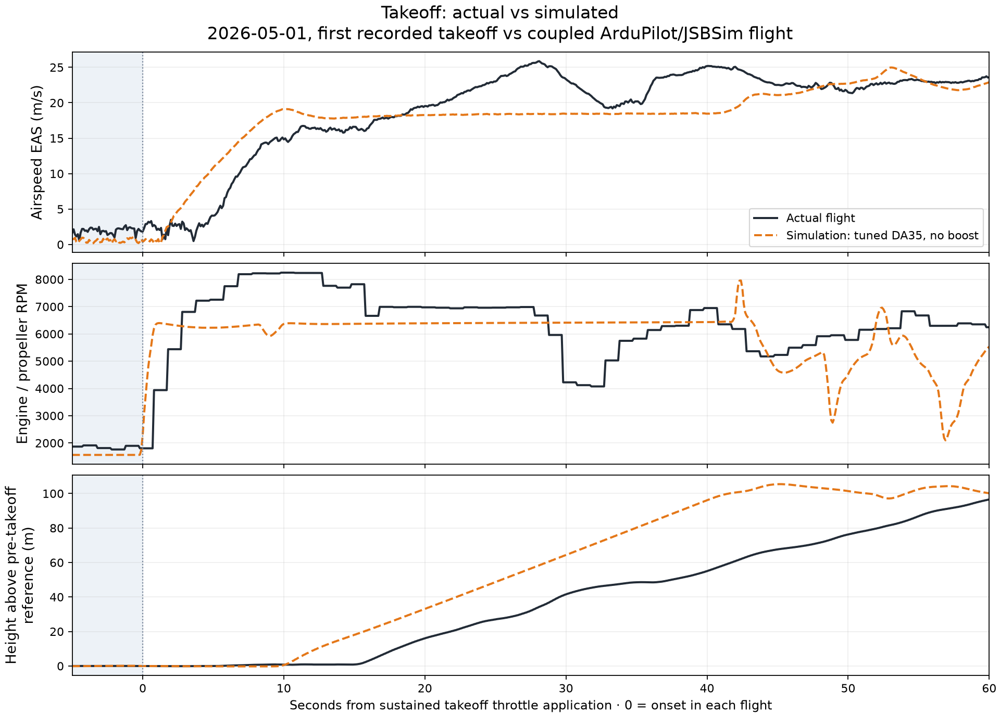
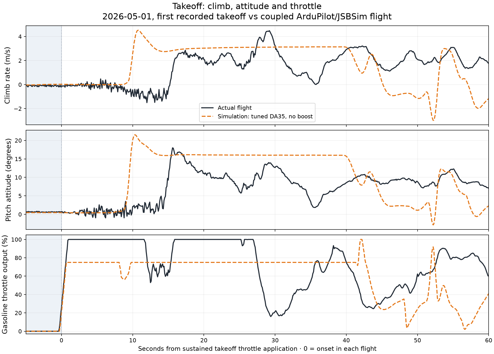
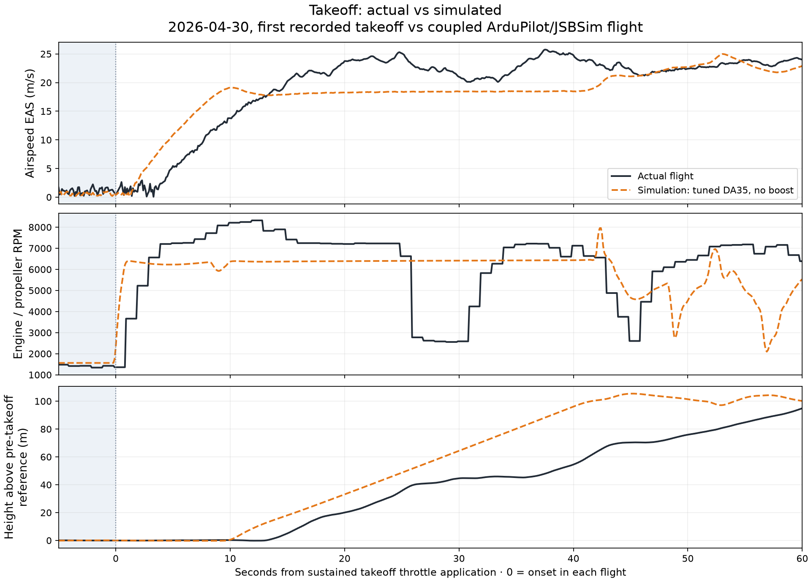
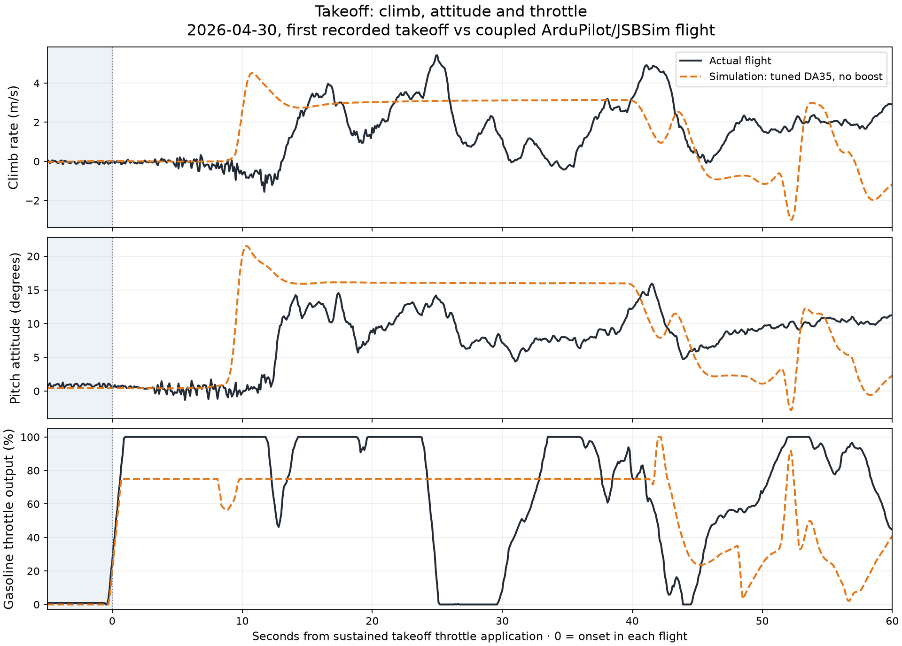

These plots use the saved coupled ArduPilot/JSBSim run of the cruise-tuned DA35: runtime/da35_default75_validation. Each day shows its first recorded takeoff against the same simulated takeoff. The parameter-file hash is included in the provenance.
Black solid line = actual flight.
Orange dashed line = simulated flight, without electric boost.
Time zero is independently detected when throttle reaches 20% and stays above it for one second during takeoff. We show five seconds before and 60 seconds after this event. This is throttle onset—not liftoff. Airspeed is EAS for both traces; simulated RPM comes from JSBSim truth on the shared simulation clock.
Different takeoff conditions: you recall approximately 20% electric assistance during takeoff/initial climb. The simulation has no boost. Actual logs show an initial flap command of 50; the simulated aircraft has no calibrated flap model. Wind, commands, targets and aircraft configuration can also differ. These overlays reveal differences; they do not isolate engine error or prove takeoff fidelity.
What to look for: compare the initial RPM rise and acceleration, then the rate of height gain. The pitch and throttle panels help explain when different controller commands contribute to separation. Once the simulation reaches its altitude target, it reduces throttle; later RPM differences also reflect that different flight path.


The throttle traces show why these are not identical-input tests. Recorded throttle represents the gasoline output channel; it does not measure electric assistance. The simulation controller can command a different throttle or pitch while flying its own mission.


The throttle traces show why these are not identical-input tests. Recorded throttle represents the gasoline output channel; it does not measure electric assistance. The simulation controller can command a different throttle or pitch while flying its own mission.
Descriptive values over the displayed interval. A blank timing means the threshold was not reached within 60 seconds. Values include recorded transients; no curve shifts or smoothing were fitted to improve agreement.
| Flight day | Source | Peak RPM (0–60 s) | Seconds to 20 m/s EAS | Seconds to +50 m | Initial flap command (logged units) | Missing RPM samples |
|---|---|---|---|---|---|---|
| 2026-05-01 | Actual | 8247.0 | 21.1 | 37.5 | 50.0 | 0 |
| 2026-05-01 | Simulated | 7958.5 | 42.5 | 25.5 | 10.8 | 0 |
| 2026-04-30 | Actual | 8321.0 | 15.0 | 38.3 | 50.0 | 0 |
| 2026-04-30 | Simulated | 7958.5 | 42.5 | 25.5 | 10.8 | 0 |
Simulated data · May 1 actual data · April 30 actual data · Alignment and provenance
Simulation: runtime/da35_default75_validation. Flight-controller states are extracted from the simulated BIN log using the same fields as the actual logs. RPM is joined from JSBSim truth within 30 ms, with no clock offset fitted.